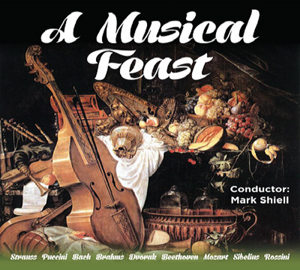

Conducted by -
Richard McIntyre OAM, BMus (University of Sydney)
 Richard has maintained a long and distinguished career as bassoonist, music educator, conductor and arranger. A Composition graduate from Sydney University, he was appointed Associate Principal Bassoon with the Sydney Symphony Orchestra as a 20-year-old in 1968, moving to The Canberra School of Music as a foundation member of the Canberra Wind Soloists in 1978. With this renowned quintet, he recorded and toured internationally during a 30-year period, and gave it a unique repertoire with his virtuoso arrangements of large-scale orchestral works. He was for many years Principal Bassoon with the Australian Chamber Orchestra, and appeared on many occasions as guest Principal Bassoon with most of the Symphony Australia Orchestras - also as concerto soloist, and independently as a recitalist. His continuing work as Principal Bassoon with the Canberra Symphony Orchestra dates back to student days of 1965 - 67. If you'd like to hear some of his work as bassoonist, chamber musician, and arranger, you'll find it on YouTube under Canberra Wind Soloists.
Richard has maintained a long and distinguished career as bassoonist, music educator, conductor and arranger. A Composition graduate from Sydney University, he was appointed Associate Principal Bassoon with the Sydney Symphony Orchestra as a 20-year-old in 1968, moving to The Canberra School of Music as a foundation member of the Canberra Wind Soloists in 1978. With this renowned quintet, he recorded and toured internationally during a 30-year period, and gave it a unique repertoire with his virtuoso arrangements of large-scale orchestral works. He was for many years Principal Bassoon with the Australian Chamber Orchestra, and appeared on many occasions as guest Principal Bassoon with most of the Symphony Australia Orchestras - also as concerto soloist, and independently as a recitalist. His continuing work as Principal Bassoon with the Canberra Symphony Orchestra dates back to student days of 1965 - 67. If you'd like to hear some of his work as bassoonist, chamber musician, and arranger, you'll find it on YouTube under Canberra Wind Soloists.
Simultaneously, he has sustained a career as one of Australia's most respected bassoon teachers, at all levels from beginner to post-graduate and professional. In addition he has worked tirelessly in the development of orchestral and ensemble skills with students of all instruments, particularly at the advanced tertiary level. He was for many years a regular tutor and conductor at the Australian Youth Orchestra's National Music Camps. He has taught over many years in south-east Asia.
His work as a conductor is well-known, particularly in Canberra. He was Conductor and Musical Director of the Canberra Youth Orchestra from 1980 - 1990, greatly broadening its repertoire and general endeavour, and led it on three highly-successful and widely-acclaimed European tours. His Canberra contribution has included development of and much work with the School of Music Orchestra, Canberra Opera, Canberra Philharmonic Society, thirteen-years as Musical Director of The Llewellyn Choir (with development of its accompanying professional ensemble, The Canberra Chamber Orchestra), and three years as Musical Director of The Oriana Chorale.
His numerous conducting activities outside of Canberra have included the foundation and development of the Barrier Reef Orchestra, with which he continues his association as Artistic Advisor and frequent conductor.
His 35-year career at the Canberra (now ANU) School of Music played a significant part in the creation of its erstwhile international reputation. Awards have included 1986 Canberran of the Year, Advance Australia, Sounds Australian, and National Critics' Circle awards. In 1992 he was granted an Order of Australia Medal, for services to Music and Music Education, particularly for his work with the Canberra Youth Orchestra. In 2013, he was elected President of the Australian Double Reed Society.
The Barrier Reef Orchestra’s final concert for 2015 is A Musical Feast.
The conductor is Mark Shiell making a return visit to Townsville.
The concert will include music from many different composers including Bach, Brahms and Strauss and will feature soprano, Julie O’Connor who will sing numbers from Puccini and Dvorak.

Mark has guest-conducted ensembles including the Melbourne Symphony Orchestra, West Australian Symphony, Moscow Symphony Orchestra, State Academic Symphony Orchestra of St. Petersburg, Victorian Opera, Orchestra Ensemble Kanazawa, Canberra Symphony Orchestra, Sydney Sinfonia, Melbourne Youth Orchestra, University of Melbourne Symphony Orchestra and the Orchestras of the State Music Camps in Melbourne and Adelaide. Currently he serves as Artistic Director and Principal Conductor of Zelman Symphony Orchestra, the Ballarat Symphony and the Macquarie Philharmonia. His love of community and youth music has kept him busy contributing to the growth and development of important initiatives in both of these areas here in Australia. Most recently, Mark developed a Regional Orchestra Weekend for ensembles from across Victoria to meet and perform together, with the aim to make this an annual event. Mark is also passionate about the education and training of future conductors, and has been frequently involved as a guest teacher of the Masters of Conducting students at the Melbourne Conservatorium in 2015.